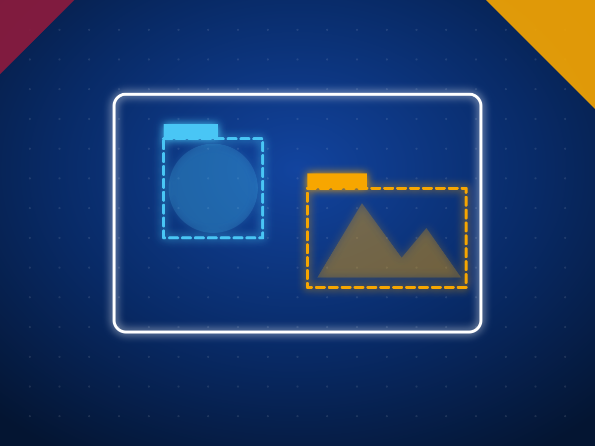

Outsourcing to Sri Lanka: business services beyond tech
Sri Lanka is best known for software, but its business process industry is just as established. Global banks, exchanges and insurers have run operations in Colombo for more than 20 years, and companies in the UK, Australia, the US and the Gulf outsource accounting, investment research, healthcare billing, customer operations, legal support, engineering design, marketing and virtual assistance there. Official data puts combined IT and business process exports at USD 1.64 billion in 2025, and the industry estimates about 175,000 people work in more than 680 IT and BPM companies.
Last reviewed 23 October 2026. General information with sources linked; not a ranking of providers.
- $1.64B
- IT and BPM exports in 2025 (official)
- 175,000
- people in IT and BPM (SLASSCOM)
- 9,000+
- Chartered Accountants, plus 40,000 students
The official export figure is from the Export Development Board (Daily FT). SLASSCOM estimates the real total is closer to USD 2 billion because some revenue is invoiced through overseas entities (EconomyNext). Workforce and company counts: SLASSCOM via Daily FT. Accountants: Daily Mirror.
What you can outsource to Sri Lanka
| Service | What teams do | One fact |
|---|---|---|
| Accounting and bookkeeping | Bookkeeping, AP and AR, month-end close, management accounts and FP&A. | 9,000+ CA Sri Lanka members, plus 40,000+ students |
| Investment research and KPO | Equity and credit research, financial data, fund operations. | 2003 Amba Research starts in Colombo |
| Virtual assistants | Executive and operations assistants, admin and coordination. | 1.5 hrs time difference with the UAE |
| Digital marketing | SEO, paid media, social, content and marketing operations. | 45 countries one Colombo agency says it has worked in |
| Customer support | Email, chat and voice support, customer operations and back office. | 2004 HSBC begins operations in Colombo |
| Medical billing and RCM | Medical billing, coding, denials and AR follow-up for US providers. | 300 seats in one Kandy medical billing centre |
| Legal process outsourcing | Paralegal, contract review, legal research and company secretarial. | 14+ jurisdictions served by one Colombo LPO |
| Engineering, BIM and quantity surveying | BIM modelling, CAD drafting, detailing, estimating and BOQs. | 1.5 hrs time difference with Gulf project teams |
| Data annotation and AI data | Labelling, data conversion, LLM evaluation and local language data. | 1994 a data conversion firm gains BOI status |
| Insurance, HR and payroll | Underwriting support, claims, payroll, HR and recruitment. | 200 seats in a UK insurer's Colombo hub (2025) |
Explore by service
 Accounting and bookkeepingBookkeeping, AP and AR, month-end close, management accounts and FP&A.Investment research and KPOEquity and credit research, financial data, fund operations.Virtual assistantsExecutive and operations assistants, admin and coordination.Digital marketingSEO, paid media, social, content and marketing operations.Customer supportEmail, chat and voice support, customer operations and back office.
Accounting and bookkeepingBookkeeping, AP and AR, month-end close, management accounts and FP&A.Investment research and KPOEquity and credit research, financial data, fund operations.Virtual assistantsExecutive and operations assistants, admin and coordination.Digital marketingSEO, paid media, social, content and marketing operations.Customer supportEmail, chat and voice support, customer operations and back office. Medical billing and RCMMedical billing, coding, denials and AR follow-up for US providers.Legal process outsourcingParalegal, contract review, legal research and company secretarial.
Medical billing and RCMMedical billing, coding, denials and AR follow-up for US providers.Legal process outsourcingParalegal, contract review, legal research and company secretarial. Engineering, BIM and quantity surveyingBIM modelling, CAD drafting, detailing, estimating and BOQs.
Engineering, BIM and quantity surveyingBIM modelling, CAD drafting, detailing, estimating and BOQs.
Data annotation and AI dataLabelling, data conversion, LLM evaluation and local language data. Insurance, HR and payrollUnderwriting support, claims, payroll, HR and recruitment.
Insurance, HR and payrollUnderwriting support, claims, payroll, HR and recruitment.Why companies choose Sri Lanka for business services
- Qualified people, not just labour. More than 9,000 Chartered Accountants and 40,000 students, around 15,000 CIMA students and members, and English medium professional training.
- A long record with demanding clients. HSBC (since 2004), the London Stock Exchange Group (1,600+ people) and investment research teams serving more than 50 global financial institutions.
- Time zones that work for the Gulf, UK and Australia. 1.5 hours from Dubai, a shared afternoon with Sydney and an overlap with the UK day.
- Open to foreign companies. Business services companies can be fully foreign owned. See the setup guide.
Where it fits less well
- Very large voice operations of thousands of seats. The Philippines is far bigger for that. See Sri Lanka vs the Philippines.
- Pure data entry. It is being automated, and a 2025 study names clerical work as the most AI-exposed job group in Sri Lanka (Institute of Policy Studies). Outsource judgement work, not keystrokes.
- Live US daytime coverage, which needs night shifts.
By buyer market
| Your market | Time difference | How it works |
|---|---|---|
| United Kingdom | 4.5 to 5.5 hours ahead | A Sri Lankan shift starting early afternoon covers the full UK day. Work processed in the Sri Lankan morning is ready before London opens. |
| Australia | 4.5 to 5.5 hours behind Sydney, 2.5 behind Perth | The Sri Lankan morning overlaps the Australian afternoon, and overnight work is ready for the next Australian morning. |
| United Arab Emirates | 1.5 hours ahead | Practically the same working day, with a short flight between Colombo and Dubai. |
| United States | 9.5 to 13.5 hours ahead | Best for overnight processing that is done when the US day starts. Live US-hours support needs night shifts. |

From the UK
Accounting, insurance, legal and BIM teams that cover the UK day.
UK guideFrom Australia
Offshore accountants, assistants and marketers with a shared afternoon.
Australia guideFrom the USA
Medical billing, research and back office with overnight turnaround.
USA guide
From the UAE
Teams 1.5 hours away that share almost the whole working day.
UAE guideBPO companies in Sri Lanka
Who delivers which service from Sri Lanka, with sources.
See the directoryTell us what you want to offshore
Describe the work, volumes and hours. We will tell you honestly whether Sri Lanka fits and introduce providers or people who do it today.
Common questions
Is Sri Lanka good for outsourcing?
For finance and accounting, investment research, healthcare revenue cycle, banking and insurance operations and software, yes. It exported USD 1.64 billion of IT and business process services in 2025 according to official data, and global firms including HSBC and LSEG have run operations in Colombo for more than 20 years. It is smaller than the largest outsourcing destinations, so it suits specialist teams better than very large, low cost voice operations.
What are the main BPO services in Sri Lanka?
Finance and accounting, investment research and analytics, banking and insurance operations, healthcare revenue cycle management, customer operations, legal process outsourcing, engineering design and quantity surveying, digital marketing and virtual assistance.
How big is Sri Lanka's BPO industry?
Official Export Development Board data puts combined IT and business process exports at USD 1.64 billion in 2025, up 8.8%. The industry body SLASSCOM estimates the real figure is closer to USD 2 billion because some revenue is invoiced offshore, and counts about 175,000 people across more than 680 IT and BPM companies.
What time zone is Sri Lanka in for outsourcing?
UTC+5:30 all year with no daylight saving. That is 1.5 hours ahead of the UAE, 4.5 to 5.5 hours ahead of the UK and 4.5 to 5.5 hours behind Sydney, so teams share most of the working day with the Gulf and part of it with the UK and Australia.
Sri Lanka or the Philippines for outsourcing?
The Philippines is far larger and leads on general English rankings and high volume voice support. Sri Lanka is smaller and stronger in qualified finance and accounting, investment research, banking and insurance operations and software. Many companies use the Philippines for volume support and Sri Lanka for finance and specialist work.
How do I start outsourcing to Sri Lanka?
Pick one well documented process, choose a provider or hire a dedicated team through a staffing provider or employer of record, start with a small pilot and expand once quality is proven. Tell us what you need and we will introduce options.
Looking for software teams instead? See software outsourcing, dedicated teams and finance and shared services. Buying physical products? See Source from Sri Lanka and the export statistics.